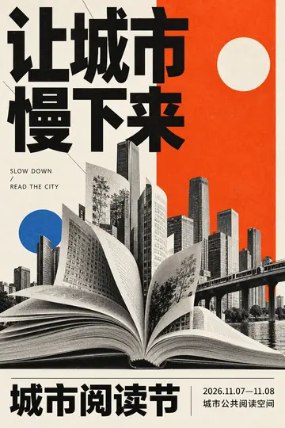
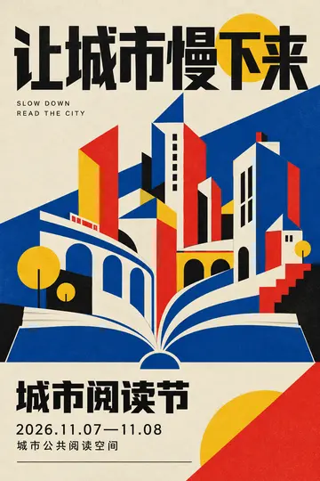
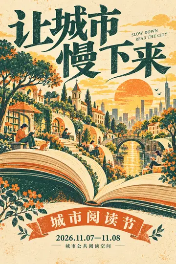
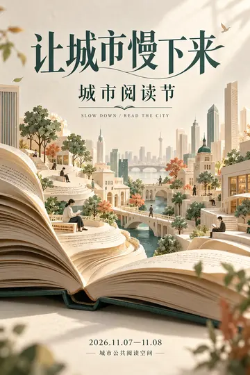
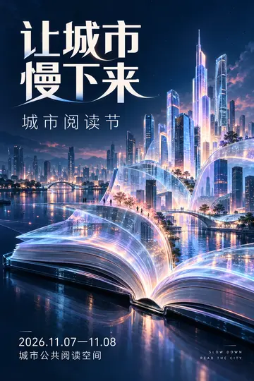

数字多媒体课程作品
《让城市慢下来》｜AI 系列海报设计
以「城市阅读节」为主题，用“书页生长成城市”作为共同视觉意象。五张海报保留相同的活动信息，通过不同构图、色彩、字体和材质表达同一主题。
点击海报查看原图

以高对比文字和清晰网格组织活动信息。

用几何形和红黄蓝简化城市轮廓。

用颗粒与印刷色调营造复古质感。

以层叠纸页与柔光表现阅读的安静感。

用数字光效呈现未来感的城市。
创作内容：主题设定、视觉风格规划、AI 图像生成与成品整理。
作品成果：五张同主题竖版海报。
AI 参与方式
创意设定：先统一活动信息与书页、城市的视觉意象，再设定五种风格。
AI 辅助：把不同构图、材质和配色要求写进提示词，生成海报画面。
成品检查：核对标题、活动信息及风格辨识度，筛选并整理成品。